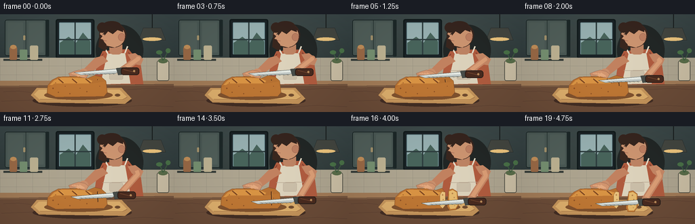
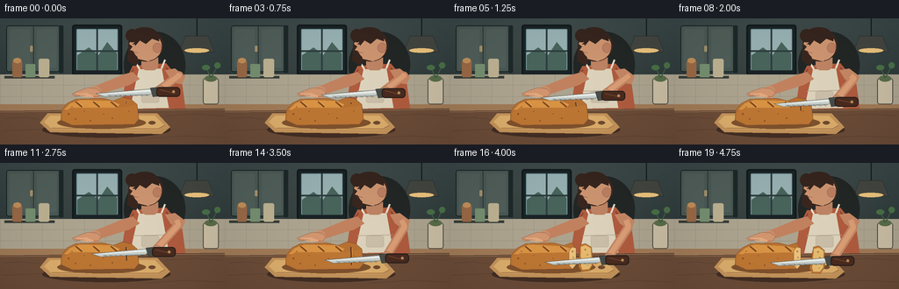
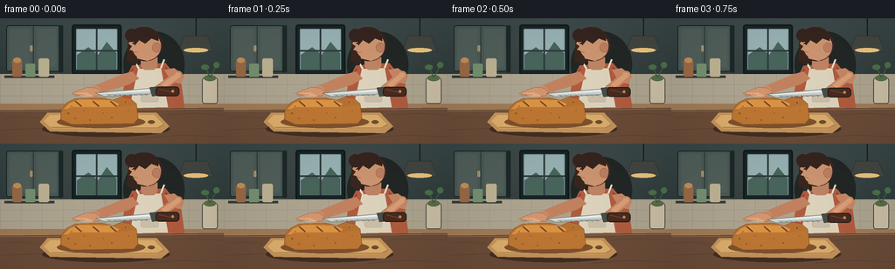
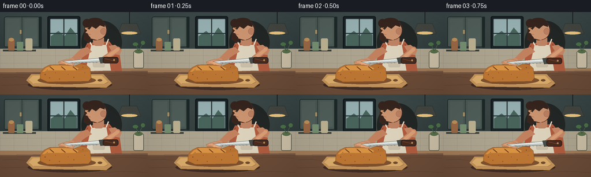
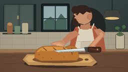
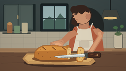

CODING AGENTS AS PIXEL WORLD MODELS
traex/GPT-5.6-Sol · motion_rationality_0017
点击播放 · 原生 RGB 像素
逐轮保存的候选
回放视频、检查图与代码变化。
每份候选均可单独播放。实际图片检查记录在下方工具轨迹中。
候选 01播放与检查图
点击播放 · 原生 RGB 像素

展开代码变化
--- 上一保存版本
+++ 本次保存版本
@@ -0,0 +1,213 @@
+from pathlib import Path
+import math
+import numpy as np
+from PIL import Image, ImageDraw, ImageFilter
+import artifact_io
+
+W,H,N = 256,144,20
+S=3
+OUT=Path(__file__).resolve().parent
+
+def P(points): return [(int(x*S),int(y*S)) for x,y in points]
+def box(b): return tuple(int(v*S) for v in b)
+
+def ellipse(d,b,fill,outline=None,width=1):
+ d.ellipse(box(b),fill=fill,outline=outline,width=max(1,int(width*S)))
+def polygon(d,p,fill,outline=None): d.polygon(P(p),fill=fill,outline=outline)
+def line(d,p,fill,width=1,joint='curve'): d.line(P(p),fill=fill,width=max(1,int(width*S)),joint=joint)
+def rr(d,b,r,fill,outline=None,width=1): d.rounded_rectangle(box(b),radius=int(r*S),fill=fill,outline=outline,width=max(1,int(width*S)))
+
+def gradient_bg():
+ y=np.linspace(0,1,H*S)[:,None,None]
+ top=np.array([58,71,72.])[None,None,:]
+ bot=np.array([31,42,43.])[None,None,:]
+ a=top*(1-y)+bot*y
+ a=np.repeat(a,W*S,axis=1)
+ # subtle warm pool of light near work area
+ yy,xx=np.mgrid[0:H*S,0:W*S]
+ glow=np.exp(-(((xx/S-133)/90)**2+((yy/S-59)/58)**2))*12
+ a += glow[...,None]*np.array([1,.78,.45])[None,None,:]
+ return Image.fromarray(np.uint8(np.clip(a,0,255)),'RGB')
+
+BG=gradient_bg()
+
+def draw_background(im):
+ d=ImageDraw.Draw(im)
+ # upper cabinetry
+ rr(d,(7,8,68,61),3,(74,88,84),(25,36,36),1)
+ line(d,[(38,9),(38,60)],(42,54,52),1)
+ rr(d,(11,12,34,56),1,(80,94,89)); rr(d,(42,12,64,56),1,(80,94,89))
+ rr(d,(34.5,31,37,38),1,(181,157,112)); rr(d,(67,8,72,62),1,(29,40,40))
+ # window / cool daylight
+ rr(d,(82,7,139,65),3,(27,36,39),(18,27,28),2)
+ rr(d,(87,12,134,59),1,(119,151,156))
+ # gradient-ish sky bands and vague exterior
+ polygon(d,[(88,13),(133,13),(133,39),(88,48)],(151,176,177))
+ polygon(d,[(88,42),(101,33),(112,42),(122,27),(133,40),(133,59),(88,59)],(72,100,91))
+ line(d,[(110.5,12),(110.5,59)],(46,62,63),2); line(d,[(87,37),(134,37)],(46,62,63),2)
+ # tile backsplash
+ polygon(d,[(0,64),(256,64),(256,101),(0,101)],(173,164,143))
+ for x in range(0,257,24): line(d,[(x,64),(x,101)],(145,139,123),.55)
+ for yy in (76,89): line(d,[(0,yy),(256,yy)],(145,139,123),.55)
+ # pendant light
+ line(d,[(224,0),(224,20)],(25,30,30),1.5)
+ polygon(d,[(211,20),(237,20),(244,38),(204,38)],(67,70,64),(30,33,32))
+ ellipse(d,(210,34,238,39),(236,196,125))
+ # shelf details
+ line(d,[(5,67),(62,67)],(55,62,57),3)
+ rr(d,(14,48,25,67),2,(153,105,70)); ellipse(d,(15,45,24,51),(192,142,89))
+ rr(d,(29,52,40,67),1,(117,143,112)); rr(d,(44,46,56,67),2,(188,177,145))
+ # counter back lip
+ polygon(d,[(0,98),(256,98),(256,144),(0,144)],(107,76,56))
+ polygon(d,[(0,98),(256,98),(256,104),(0,107)],(161,123,87))
+ line(d,[(0,106),(256,103)],(70,48,38),1)
+ # wood grain
+ for pts in [[(2,128),(57,126),(94,128)],[(165,137),(211,134),(255,136)],[(5,114),(27,113),(45,115)],[(187,111),(223,109),(253,111)]]:
+ line(d,pts,(83,57,45),.55)
+ # flour jar / plant silhouettes for depth
+ rr(d,(231,68,249,98),3,(202,190,164),(77,77,67),1)
+ ellipse(d,(233,65,247,72),(90,109,74))
+ line(d,[(240,68),(235,56)],(61,94,63),1.5); line(d,[(241,67),(248,53)],(61,94,63),1.5)
+ ellipse(d,(230,53,239,59),(73,112,71)); ellipse(d,(244,50,251,57),(73,112,71))
+
+def draw_person(im, t, knife_y, saw):
+ d=ImageDraw.Draw(im)
+ # shadow behind person
+ ellipse(d,(141,15,211,91),(34,39,38))
+ # torso/apron, slight breathing shift
+ by=.5*math.sin(t*math.pi*2)
+ polygon(d,[(151,54+by),(189,51+by),(207,73+by),(211,103),(138,103),(143,70+by)],(176,92,63))
+ # shirt seams
+ line(d,[(152,58+by),(143,72+by)],(124,62,48),1)
+ line(d,[(189,56+by),(202,72+by)],(124,62,48),1)
+ # pale apron
+ polygon(d,[(158,58),(184,57),(192,102),(148,103)],(221,211,188))
+ line(d,[(159,58),(153,48)],(230,221,201),2); line(d,[(184,57),(188,47)],(230,221,201),2)
+ line(d,[(151,83),(191,82)],(179,162,141),1)
+ rr(d,(161,83,181,96),2,(203,191,169),(180,163,144),.6)
+ # neck
+ rr(d,(161,40,180,59),6,(190,132,100))
+ # hair mass behind head
+ ellipse(d,(146,12,186,49),(57,39,31))
+ polygon(d,[(147,27),(145,48),(155,54),(162,39)],(57,39,31))
+ # ear and face profile facing left
+ ellipse(d,(151,16,184,48),(205,149,113))
+ polygon(d,[(152,20),(147,29),(151,32),(148,36),(155,38),(157,46),(169,49),(179,42),(182,24),(170,16)],(205,149,113))
+ ellipse(d,(174,28,184,39),(188,127,98),(133,83,69),.5)
+ # hair / bun / fringe
+ ellipse(d,(143,12,158,27),(54,37,30)); ellipse(d,(151,10,178,23),(54,37,30))
+ polygon(d,[(151,18),(166,13),(181,20),(181,26),(173,23),(166,29),(159,25),(154,31)],(54,37,30))
+ # facial detail
+ line(d,[(151,29),(154,29)],(66,46,41),.8)
+ ellipse(d,(152,28,153.5,29.5),(42,35,31))
+ line(d,[(151,38),(157,39)],(139,73,65),.8)
+ # left/back arm reaching to stabilize loaf
+ polygon(d,[(151,61),(140,64),(121,83),(127,91),(147,76),(159,69)],(194,130,96))
+ ellipse(d,(116,80,130,94),(201,143,108))
+ # fingers directed over bread; detailed later atop loaf
+ # right arm responds naturally to knife depth
+ wrist=(181+saw*.7, knife_y-1)
+ elbow=(204+saw*.15,65+(knife_y-82)*.30)
+ polygon(d,[(188,59),(199,57),(211,66),(207,75),(201,74),(194,69)],(197,135,101))
+ line(d,[(201,66),elbow,wrist],(197,135,101),10)
+ line(d,[(201,65),elbow,wrist],(219,158,118),6.2)
+ ellipse(d,(wrist[0]-5,wrist[1]-5,wrist[0]+7,wrist[1]+6),(206,146,108),(130,84,67),.5)
+
+def bread_shape_points(right=158):
+ return [(69,116),(70,105),(76,97),(86,92),(117,91),(129,94),(139,90),(149,92),(156,98),(right,115),(153,121),(82,122)]
+
+def draw_board_and_bread(im, t, depth):
+ d=ImageDraw.Draw(im)
+ # board shadow and board
+ ellipse(d,(48,118,194,136),(67,46,36))
+ polygon(d,[(54,108),(179,108),(194,124),(184,132),(57,130),(45,119)],(196,148,91),(100,68,43))
+ polygon(d,[(57,111),(176,111),(187,122),(180,127),(59,126),(50,118)],(220,174,108))
+ line(d,[(59,125),(180,126),(187,122)],(154,103,62),1)
+ ellipse(d,(169,117,177,121),(112,76,48))
+ # bread shadow
+ ellipse(d,(65,112,166,126),(128,82,46))
+ separation=max(0,(t-.78)/.22)
+ if separation < .04:
+ polygon(d,bread_shape_points(),(183,113,50),(108,65,35))
+ # soft side highlight
+ polygon(d,[(73,104),(80,97),(91,93),(127,94),(136,98),(132,103),(83,104)],(217,148,68))
+ polygon(d,[(71,108),(80,102),(135,102),(155,99),(157,115),(153,120),(82,121),(71,116)],(190,119,52))
+ else:
+ # remaining loaf, freshly exposed cut face at right
+ polygon(d,[(69,116),(70,105),(77,97),(87,92),(118,91),(130,94),(139,91),(143,96),(143,116),(139,121),(82,122)],(184,113,50),(108,65,35))
+ polygon(d,[(73,104),(81,97),(91,93),(128,95),(140,98),(140,103),(82,104)],(217,148,68))
+ polygon(d,[(71,108),(80,103),(140,102),(142,116),(138,120),(82,121),(71,116)],(190,119,52))
+ # cut crumb face
+ polygon(d,[(139,96),(144,97),(144,116),(140,121),(136,117),(136,101)],(234,194,125),(127,79,40))
+ for x,y,r in [(140,101,1),(141,108,.7),(139,114,.8)]: ellipse(d,(x-r,y-r,x+r,y+r),(180,132,77))
+ # detached slice as rotated local layer
+ sl=Image.new('RGBA',(30*S,45*S),(0,0,0,0)); sd=ImageDraw.Draw(sl)
+ polygon(sd,[(5,6),(11,4),(18,8),(21,27),(17,35),(8,36),(4,31)],(191,119,51),(103,63,34))
+ polygon(sd,[(6,8),(11,6),(17,9),(19,28),(16,33),(9,34),(7,30)],(231,187,111))
+ for x,y,r in [(11,11,1),(14,17,.8),(11,25,.7),(15,29,.6)]: ellipse(sd,(x-r,y-r,x+r,y+r),(184,134,76))
+ ang=-8*separation
+ sl=sl.rotate(ang,resample=Image.Resampling.BICUBIC,expand=True)
+ im.alpha_composite(sl,(int((140+8*separation)*S),int((87+2*separation)*S)))
+ # fixed scoring marks and toasted texture
+ d=ImageDraw.Draw(im)
+ for x in (91,111,131):
+ line(d,[(x-5,95),(x+2,101)],(128,73,35),2.2)
+ line(d,[(x-4,94.5),(x+3,99.5)],(237,169,82),.7)
+ dots=[(78,109,1),(86,115,.7),(96,106,.6),(103,117,.8),(118,109,.6),(128,114,.7),(147,106,.6),(82,101,.6)]
+ for x,y,r in dots: ellipse(d,(x-r,y-r,x+r,y+r),(143,82,38))
+ # progressive vertical incision at the slice plane
+ cut_bottom=96+23*depth
+ if separation < .05:
+ line(d,[(143.5,96),(144,cut_bottom)],(91,55,31),1.4)
+ line(d,[(145,97),(145.3,cut_bottom)],(231,170,87),.5)
+ # stabilizing left hand on top, behind knife but clearly gripping safely away from cut
+ polygon(d,[(116,82),(125,84),(130,88),(127,94),(120,93),(114,90),(103,91),(101,87),(109,84)],(209,149,111),(129,84,67))
+ for i in range(4):
+ line(d,[(106+i*3.6,87-i*.15),(116+i*2.7,91.2)],(227,169,127),2.3)
+ line(d,[(102,88),(113,89)],(145,91,70),.5)
+
+def draw_knife(im, knife_y, saw, depth):
+ d=ImageDraw.Draw(im)
+ # slight angle: handle is higher than blade tip early, level later
+ hy=knife_y
+ tipx=109+saw
+ hiltx=178+saw
+ tipy=hy+3.5
+ # blade broad upper edge and serrated lower edge
+ blade=[(tipx,tipy),(171+saw,hy-2),(178+saw,hy+1),(169+saw,hy+5),(119+saw,hy+7)]
+ polygon(d,blade,(200,207,204),(65,72,71))
+ # blade cool reflection
+ polygon(d,[(tipx+4,tipy+.5),(170+saw,hy-1),(172+saw,hy+1),(121+saw,hy+4)],(235,239,232))
+ line(d,[(122+saw,hy+5.5),(169+saw,hy+4)],(103,112,109),.7)
+ # serration ticks
+ for x in range(124,168,6):
+ line(d,[(x+saw,hy+5),(x+2+saw,hy+6.3)],(61,67,66),.55)
+ # hilt and wooden handle
+ polygon(d,[(171+saw,hy-3),(181+saw,hy-4),(184+saw,hy+6),(174+saw,hy+7)],(72,77,73),(35,39,38))
+ rr(d,(178+saw,hy-4,205+saw,hy+7),4,(73,43,31),(35,27,24),1)
+ line(d,[(182+saw,hy-1),(199+saw,hy+3)],(125,76,50),1)
+ ellipse(d,(196+saw,hy-0.2,199+saw,hy+2.8),(185,139,90))
+
+def make_frame(i):
+ t=i/(N-1)
+ # continuous downward pressure with three smooth sawing strokes; damp at the end
+ ease=t*t*(3-2*t)
+ depth=min(1, ease*1.08)
+ saw=5.0*math.sin(2*math.pi*3*t)*(1-0.55*max(0,(t-.72)/.28))
+ knife_y=82+28*depth + 0.5*math.sin(2*math.pi*3*t+0.8)
+ im=BG.convert('RGBA')
+ draw_background(im)
+ draw_person(im,t,knife_y,saw)
+ draw_board_and_bread(im,t,depth)
+ draw_knife(im,knife_y,saw,depth)
+ # foreground vignette and contact enhancement
+ arr=np.asarray(im.convert('RGB')).astype(np.float32)
+ yy,xx=np.mgrid[0:H*S,0:W*S]
+ vig=1-0.12*np.clip(((xx-W*S/2)/(W*S*.72))**2+((yy-H*S/2)/(H*S*.85))**2,0,1)
+ arr*=vig[...,None]
+ out=Image.fromarray(np.uint8(np.clip(arr,0,255))).resize((W,H),Image.Resampling.LANCZOS)
+ return np.asarray(out,dtype=np.uint8)
+
+frames=np.stack([make_frame(i) for i in range(N)])
+artifact_io.save(frames,OUT)
+print('saved',frames.shape,frames.dtype)
候选 02播放与检查图
点击播放 · 原生 RGB 像素


展开代码变化
--- 上一保存版本
+++ 本次保存版本
@@ -102,8 +102,8 @@
ellipse(d,(152,28,153.5,29.5),(42,35,31))
line(d,[(151,38),(157,39)],(139,73,65),.8)
# left/back arm reaching to stabilize loaf
- polygon(d,[(151,61),(140,64),(121,83),(127,91),(147,76),(159,69)],(194,130,96))
- ellipse(d,(116,80,130,94),(201,143,108))
+ polygon(d,[(151,61),(140,64),(106,78),(109,88),(147,76),(159,69)],(194,130,96))
+ ellipse(d,(101,77,115,91),(201,143,108))
# fingers directed over bread; detailed later atop loaf
# right arm responds naturally to knife depth
wrist=(181+saw*.7, knife_y-1)
@@ -161,10 +161,10 @@
line(d,[(143.5,96),(144,cut_bottom)],(91,55,31),1.4)
line(d,[(145,97),(145.3,cut_bottom)],(231,170,87),.5)
# stabilizing left hand on top, behind knife but clearly gripping safely away from cut
- polygon(d,[(116,82),(125,84),(130,88),(127,94),(120,93),(114,90),(103,91),(101,87),(109,84)],(209,149,111),(129,84,67))
+ polygon(d,[(100,79),(110,80),(115,84),(112,89),(105,89),(99,87),(85,89),(82,86),(91,82)],(209,149,111),(129,84,67))
for i in range(4):
- line(d,[(106+i*3.6,87-i*.15),(116+i*2.7,91.2)],(227,169,127),2.3)
- line(d,[(102,88),(113,89)],(145,91,70),.5)
+ line(d,[(87+i*3.5,85.8-i*.1),(97+i*3.0,89)],(227,169,127),2.3)
+ line(d,[(84,87),(97,88)],(145,91,70),.5)
def draw_knife(im, knife_y, saw, depth):
d=ImageDraw.Draw(im)
可观测工具轨迹
实际执行的命令与返回图片。
命令 1exit 0
/bin/bash -lc "cat prompt.txt && printf '\\n---RULES---\\n' && cat GENERATION_RULES.md && printf '\\n---SPEC---\\n' && cat task_spec.json"
命令 2exit 0
/bin/bash -lc "find . -maxdepth 2 -type f -printf '%p %s bytes\\n' | sort && printf '\\nTools:\\n' && command -v ffmpeg || true && command -v python3 || true && command -v convert || true"
命令 3exit 0
/bin/bash -lc 'cat artifact_io.py'
命令 4exit 0
/bin/bash -lc "cat > generate.py <<'PY'
from pathlib import Path
import math
import numpy as np
from PIL import Image, ImageDraw, ImageFilter
import artifact_io
W,H,N = 256,144,20
S=3
OUT=Path(__file__).resolve().parent
def P(points): return [(int(x*S),int(y*S)) for x,y in points]
def box(b): return tuple(int(v*S) for v in b)
def ellipse(d,b,fill,outline=None,width=1):
d.ellipse(box(b),fill=fill,outline=outline,width=max(1,int(width*S)))
def polygon(d,p,fill,outline=None): d.polygon(P(p),fill=fill,outline=outline)
def line(d,p,fill,width=1,joint='curve'): d.line(P(p),fill=fill,width=max(1,int(width*S)),joint=joint)
def rr(d,b,r,fill,outline=None,width=1): d.rounded_rectangle(box(b),radius=int(r*S),fill=fill,outline=outline,width=max(1,int(width*S)))
def gradient_bg():
y=np.linspace(0,1,H*S)[:,None,None]
top=np.array([58,71,72.])[None,None,:]
bot=np.array([31,42,43.])[None,None,:]
a=top*(1-y)+bot*y
a=np.repeat(a,W*S,axis=1)
# subtle warm pool of light near work area
yy,xx=np.mgrid[0:H*S,0:W*S]
glow=np.exp(-(((xx/S-133)/90)**2+((yy/S-59)/58)**2))*12
a += glow[...,None]*np.array([1,.78,.45])[None,None,:]
return Image.fromarray(np.uint8(np.clip(a,0,255)),'RGB')
BG=gradient_bg()
def draw_background(im):
d=ImageDraw.Draw(im)
# upper cabinetry
rr(d,(7,8,68,61),3,(74,88,84),(25,36,36),1)
line(d,[(38,9),(38,60)],(42,54,52),1)
rr(d,(11,12,34,56),1,(80,94,89)); rr(d,(42,12,64,56),1,(80,94,89))
rr(d,(34.5,31,37,38),1,(181,157,112)); rr(d,(67,8,72,62),1,(29,40,40))
# window / cool daylight
rr(d,(82,7,139,65),3,(27,36,39),(18,27,28),2)
rr(d,(87,12,134,59),1,(119,151,156))
# gradient-ish sky bands and vague exterior
polygon(d,[(88,13),(133,13),(133,39),(88,48)],(151,176,177))
polygon(d,[(88,42),(101,33),(112,42),(122,27),(133,40),(133,59),(88,59)],(72,100,91))
line(d,[(110.5,12),(110.5,59)],(46,62,63),2); line(d,[(87,37),(134,37)],(46,62,63),2)
# tile backsplash
polygon(d,[(0,64),(256,64),(256,101),(0,101)],(173,164,143))
for x in range(0,257,24): line(d,[(x,64),(x,101)],(145,139,123),.55)
for yy in (76,89): line(d,[(0,yy),(256,yy)],(145,139,123),.55)
# pendant light
line(d,[(224,0),(224,20)],(25,30,30),1.5)
polygon(d,[(211,20),(237,20),(244,38),(204,38)],(67,70,64),(30,33,32))
ellipse(d,(210,34,238,39),(236,196,125))
# shelf details
line(d,[(5,67),(62,67)],(55,62,57),3)
rr(d,(14,48,25,67),2,(153,105,70)); ellipse(d,(15,45,24,51),(192,142,89))
rr(d,(29,52,40,67),1,(117,143,112)); rr(d,(44,46,56,67),2,(188,177,145))
# counter back lip
polygon(d,[(0,98),(256,98),(256,144),(0,144)],(107,76,56))
polygon(d,[(0,98),(256,98),(256,104),(0,107)],(161,123,87))
line(d,[(0,106),(256,103)],(70,48,38),1)
# wood grain
for pts in [[(2,128),(57,126),(94,128)],[(165,137),(211,134),(255,136)],[(5,114),(27,113),(45,115)],[(187,111),(223,109),(253,111)]]:
line(d,pts,(83,57,45),.55)
# flour jar / plant silhouettes for depth
rr(d,(231,68,249,98),3,(202,190,164),(77,77,67),1)
ellipse(d,(233,65,247,72),(90,109,74))
line(d,[(240,68),(235,56)],(61,94,63),1.5); line(d,[(241,67),(248,53)],(61,94,63),1.5)
ellipse(d,(230,53,239,59),(73,112,71)); ellipse(d,(244,50,251,57),(73,112,71))
def draw_person(im, t, knife_y, saw):
d=ImageDraw.Draw(im)
# shadow behind person
ellipse(d,(141,15,211,91),(34,39,38))
# torso/apron, slight breathing shift
by=.5*math.sin(t*math.pi*2)
polygon(d,[(151,54+by),(189,51+by),(207,73+by),(211,103),(138,103),(143,70+by)],(176,92,63))
# shirt seams
line(d,[(152,58+by),(143,72+by)],(124,62,48),1)
line(d,[(189,56+by),(202,72+by)],(124,62,48),1)
# pale apron
polygon(d,[(158,58),(184,57),(192,102),(148,103)],(221,211,188))
line(d,[(159,58),(153,48)],(230,221,201),2); line(d,[(184,57),(188,47)],(230,221,201),2)
line(d,[(151,83),(191,82)],(179,162,141),1)
rr(d,(161,83,181,96),2,(203,191,169),(180,163,144),.6)
# neck
rr(d,(161,40,180,59),6,(190,132,100))
# hair mass behind head
ellipse(d,(146,12,186,49),(57,39,31))
polygon(d,[(147,27),(145,48),(155,54),(162,39)],(57,39,31))
# ear and face profile facing left
ellipse(d,(151,16,184,48),(205,149,113))
polygon(d,[(152,20),(147,29),(151,32),(148,36),(155,38),(157,46),(169,49),(179,42),(182,24),(170,16)],(205,149,113))
ellipse(d,(174,28,184,39),(188,127,98),(133,83,69),.5)
# hair / bun / fringe
ellipse(d,(143,12,158,27),(54,37,30)); ellipse(d,(151,10,178,23),(54,37,30))
polygon(d,[(151,18),(166,13),(181,20),(181,26),(173,23),(166,29),(159,25),(154,31)],(54,37,30))
# facial detail
line(d,[(151,29),(154,29)],(66,46,41),.8)
ellipse(d,(152,28,153.5,29.5),(42,35,31))
line(d,[(151,38),(157,39)],(139,73,65),.8)
# left/back arm reaching to stabilize loaf
polygon(d,[(151,61),(140,64),(121,83),(127,91),(147,76),(159,69)],(194,130,96))
ellipse(d,(116,80,130,94),(201,143,108))
# fingers directed over bread; detailed later atop loaf
# right arm responds naturally to knife depth
wrist=(181+saw*.7, knife_y-1)
elbow=(204+saw*.15,65+(knife_y-82)*.30)
polygon(d,[(188,59),(199,57),(211,66),(207,75),(201,74),(194,69)],(197,135,101))
line(d,[(201,66),elbow,wrist],(197,135,101),10)
line(d,[(201,65),elbow,wrist],(219,158,118),6.2)
ellipse(d,(wrist[0]-5,wrist[1]-5,wrist[0]+7,wrist[1]+6),(206,146,108),(130,84,67),.5)
def bread_shape_points(right=158):
return [(69,116),(70,105),(76,97),(86,92),(117,91),(129,94),(139,90),(149,92),(156,98),(right,115),(153,121),(82,122)]
def draw_board_and_bread(im, t, depth):
d=ImageDraw.Draw(im)
# board shadow and board
ellipse(d,(48,118,194,136),(67,46,36))
polygon(d,[(54,108),(179,108),(194,124),(184,132),(57,130),(45,119)],(196,148,91),(100,68,43))
polygon(d,[(57,111),(176,111),(187,122),(180,127),(59,126),(50,118)],(220,174,108))
line(d,[(59,125),(180,126),(187,122)],(154,103,62),1)
ellipse(d,(169,117,177,121),(112,76,48))
# bread shadow
ellipse(d,(65,112,166,126),(128,82,46))
separation=max(0,(t-.78)/.22)
if separation < .04:
polygon(d,bread_shape_points(),(183,113,50),(108,65,35))
# soft side highlight
polygon(d,[(73,104),(80,97),(91,93),(127,94),(136,98),(132,103),(83,104)],(217,148,68))
polygon(d,[(71,108),(80,102),(135,102),(155,99),(157,115),(153,120),(82,121),(71,116)],(190,119,52))
else:
# remaining loaf, freshly exposed cut face at right
polygon(d,[(69,116),(70,105),(77,97),(87,92),(118,91),(130,94),(139,91),(143,96),(143,116),(139,121),(82,122)],(184,113,50),(108,65,35))
polygon(d,[(73,104),(81,97),(91,93),(128,95),(140,98),(140,103),(82,104)],(217,148,68))
polygon(d,[(71,108),(80,103),(140,102),(142,116),(138,120),(82,121),(71,116)],(190,119,52))
# cut crumb face
polygon(d,[(139,96),(144,97),(144,116),(140,121),(136,117),(136,101)],(234,194,125),(127,79,40))
for x,y,r in [(140,101,1),(141,108,.7),(139,114,.8)]: ellipse(d,(x-r,y-r,x+r,y+r),(180,132,77))
# detached slice as rotated local layer
sl=Image.new('RGBA',(30*S,45*S),(0,0,0,0)); sd=ImageDraw.Draw(sl)
polygon(sd,[(5,6),(11,4),(18,8),(21,27),(17,35),(8,36),(4,31)],(191,119,51),(103,63,34))
polygon(sd,[(6,8),(11,6),(17,9),(19,28),(16,33),(9,34),(7,30)],(231,187,111))
for x,y,r in [(11,11,1),(14,17,.8),(11,25,.7),(15,29,.6)]: ellipse(sd,(x-r,y-r,x+r,y+r),(184,134,76))
ang=-8*separation
sl=sl.rotate(ang,resample=Image.Resampling.BICUBIC,expand=True)
im.alpha_composite(sl,(int((140+8*separation)*S),int((87+2*separation)*S)))
# fixed scoring marks and toasted texture
d=ImageDraw.Draw(im)
for x in (91,111,131):
line(d,[(x-5,95),(x+2,101)],(128,73,35),2.2)
line(d,[(x-4,94.5),(x+3,99.5)],(237,169,82),.7)
dots=[(78,109,1),(86,115,.7),(96,106,.6),(103,117,.8),(118,109,.6),(128,114,.7),(147,106,.6),(82,101,.6)]
for x,y,r in dots: ellipse(d,(x-r,y-r,x+r,y+r),(143,82,38))
# progressive vertical incision at the slice plane
cut_bottom=96+23*depth
if separation < .05:
line(d,[(143.5,96),(144,cut_bottom)],(91,55,31),1.4)
line(d,[(145,97),(145.3,cut_bottom)],(231,170,87),.5)
# stabilizing left hand on top, behind knife but clearly gripping safely away from cut
polygon(d,[(116,82),(125,84),(130,88),(127,94),(120,93),(114,90),(103,91),(101,87),(109,84)],(209,149,111),(129,84,67))
for i in range(4):
line(d,[(106+i*3.6,87-i*.15),(116+i*2.7,91.2)],(227,169,127),2.3)
line(d,[(102,88),(113,89)],(145,91,70),.5)
def draw_knife(im, knife_y, saw, depth):
d=ImageDraw.Draw(im)
# slight angle: handle is higher than blade tip early, level later
hy=knife_y
tipx=109+saw
hiltx=178+saw
tipy=hy+3.5
# blade broad upper edge and serrated lower edge
blade=[(tipx,tipy),(171+saw,hy-2),(178+saw,hy+1),(169+saw,hy+5),(119+saw,hy+7)]
polygon(d,blade,(200,207,204),(65,72,71))
# blade cool reflection
polygon(d,[(tipx+4,tipy+.5),(170+saw,hy-1),(172+saw,hy+1),(121+saw,hy+4)],(235,239,232))
line(d,[(122+saw,hy+5.5),(169+saw,hy+4)],(103,112,109),.7)
# serration ticks
for x in range(124,168,6):
line(d,[(x+saw,hy+5),(x+2+saw,hy+6.3)],(61,67,66),.55)
# hilt and wooden handle
polygon(d,[(171+saw,hy-3),(181+saw,hy-4),(184+saw,hy+6),(174+saw,hy+7)],(72,77,73),(35,39,38))
rr(d,(178+saw,hy-4,205+saw,hy+7),4,(73,43,31),(35,27,24),1)
line(d,[(182+saw,hy-1),(199+saw,hy+3)],(125,76,50),1)
ellipse(d,(196+saw,hy-0.2,199+saw,hy+2.8),(185,139,90))
def make_frame(i):
t=i/(N-1)
# continuous downward pressure with three smooth sawing strokes; damp at the end
ease=t*t*(3-2*t)
depth=min(1, ease*1.08)
saw=5.0*math.sin(2*math.pi*3*t)*(1-0.55*max(0,(t-.72)/.28))
knife_y=82+28*depth + 0.5*math.sin(2*math.pi*3*t+0.8)
im=BG.convert('RGBA')
draw_background(im)
draw_person(im,t,knife_y,saw)
draw_board_and_bread(im,t,depth)
draw_knife(im,knife_y,saw,depth)
# foreground vignette and contact enhancement
arr=np.asarray(im.convert('RGB')).astype(np.float32)
yy,xx=np.mgrid[0:H*S,0:W*S]
vig=1-0.12*np.clip(((xx-W*S/2)/(W*S*.72))**2+((yy-H*S/2)/(H*S*.85))**2,0,1)
arr*=vig[...,None]
out=Image.fromarray(np.uint8(np.clip(arr,0,255))).resize((W,H),Image.Resampling.LANCZOS)
return np.asarray(out,dtype=np.uint8)
frames=np.stack([make_frame(i) for i in range(N)])
artifact_io.save(frames,OUT)
print('saved',frames.shape,frames.dtype)
PY
python3 generate.py
ls -lh pixels.npz index.html inspection.png frames/00.png frames/19.png"命令 5exit 0
/bin/bash -lc "python3 - <<'PY'
p='generate.py'
s=open(p).read()
s=s.replace(\"polygon(d,[(151,61),(140,64),(121,83),(127,91),(147,76),(159,69)],(194,130,96))\\n ellipse(d,(116,80,130,94),(201,143,108))\", \"polygon(d,[(151,61),(140,64),(106,78),(109,88),(147,76),(159,69)],(194,130,96))\\n ellipse(d,(101,77,115,91),(201,143,108))\")
s=s.replace(\"polygon(d,[(116,82),(125,84),(130,88),(127,94),(120,93),(114,90),(103,91),(101,87),(109,84)],(209,149,111),(129,84,67))\\n for i in range(4):\\n line(d,[(106+i*3.6,87-i*.15),(116+i*2.7,91.2)],(227,169,127),2.3)\\n line(d,[(102,88),(113,89)],(145,91,70),.5)\", \"polygon(d,[(100,79),(110,80),(115,84),(112,89),(105,89),(99,87),(85,89),(82,86),(91,82)],(209,149,111),(129,84,67))\\n for i in range(4):\\n line(d,[(87+i*3.5,85.8-i*.1),(97+i*3.0,89)],(227,169,127),2.3)\\n line(d,[(84,87),(97,88)],(145,91,70),.5)\")
open(p,'w').write(s)
PY
python3 generate.py
python3 - <<'PY'
from pathlib import Path
import numpy as np
from PIL import Image
z=np.load('pixels.npz')['pixels']
assert z.shape==(144,256,20) and z.dtype==np.uint32
fs=sorted(Path('frames').glob('*.png'))
assert len(fs)==20
assert all(Image.open(p).mode=='RGB' and Image.open(p).size==(256,144) for p in fs)
print('validated:', z.shape, z.dtype, len(fs), 'RGB 256x144')
PY"视觉工具实际返回图片 1

视觉工具实际返回图片 2

视觉工具实际返回图片 3

视觉工具实际返回图片 4

视觉工具实际返回图片 5

保存候选 2 份；完成命令 5 次；可验证图片返回 5 张。原始 API 响应与完整日志保留在本地。